Solution: Count the Solutions to This Nurikabe
Answer: PAPER PLANE
Written by Josh Alman and Mitchell Lee
As the title suggests, we have to count the solutions to the Nurikabe. After initial easy deductions (mostly filling in cells between two numbers, which cannot be unshaded because each region can contain at most one number, shading all cells around 1-regions, and then ensuring that these shaded cells can escape), we get something like this:
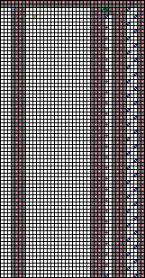
It should be clear that the four regions do not interact with each other, so if we can compute the number of ways to resolve each region, we can multiply them together in order to get the total number of solutions to the puzzle.
For ease of viewing, we’ll also rotate the sections, which does not affect the number of solutions in each region (but does swap the terminology between rows and columns).
From left to right:
Region 1
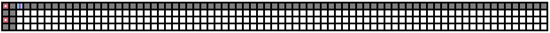
Notice that these two shaded parts are initially separated. Since there is only one unshaded island to consider, we can shade the entire perimeter. This is because if there is an unshaded cell along the perimeter, it must belong to this island. But then connecting both these two cells as well as the two shaded parts would then become impossible. So now we have the following:
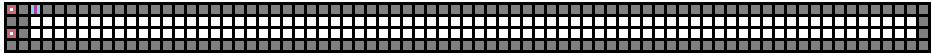
The remaining region is of size 1 + 2 × 74 = 149. As the island is of size 126, we must shade 23 additional cells. What constraints do we have for shading these cells?
In each column, we can shade at most one of two cells; if we shade both cells then the left side becomes disconnected from the right. Moreover, for two adjacent columns, we cannot shade a cell in both columns — if they are both on the top or on the bottom, this results in a 2×2 shaded region. If one is on the top and one is on the bottom, then this disconnects the left from the right. There are no other constraints.
We can use a method similar to stars and bars in order to compute the number of positions for the shaded columns. There are 74 total columns, and 23 shaded columns. Since each space between shaded columns (including before the leftmost and after the rightmost) must be empty, we may contract these, giving us a problem of instead selecting 23 shaded columns from 74 − 24 = 50 columns. Then, we can insert an unshaded column between each shaded column as well as at the ends. Therefore there are (50 choose 23) ways to choose the shaded columns.
Once we have the shaded columns, we have two ways to shade each of them — either taking the top or bottom cell. This region has (50 choose 23) × 223 = 906332499528699084800 solutions.
Region 2
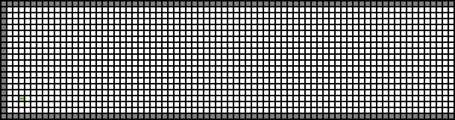
The island is of size 1348, and we are given a region of size 18 × 75 = 1350. This means that we can only shade two cells in this region. Note that, by the shaded 2×2 rule, the two corners in the top left and bottom left are unshaded. There are two general ways that we can do this:
- We can shade a cell along the perimeter, and then shade another cell “inward”. There are 74 + 16 + 74 = 164 places to shade the first cell and always one way to shade the second cell.
- We can shade two cells along the perimeter. There would be (164 choose 2) ways to do this, but not all of these are valid. In particular, if the two cells are on the same side and adjacent, then this results in a shaded 2×2. Additionally, if the two cells are adjacent to the corner, then this also fails, as that would isolate the corner from the rest of the region. So, we are overcounting by 73 + 15 + 73 + 2 = 163.
Therefore, there are 164 + (164 choose 2) − 163 = 13367 solutions in this region.
Region 3
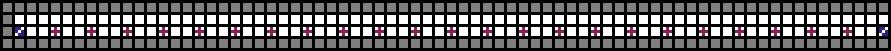
In between the 3 and 4 clues, there are 24 2×2 regions, outlined in red below.
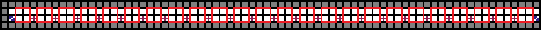
First, we claim that at most two cells in each region are unshaded. Note that at most one of the two cells on the bottom side can be unshaded, or else two clues would be in the same island. So the only way we can have three unshaded cells is through something like this:
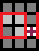
However, this forces the same pattern until it blocks the 3 clue, like this:
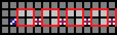
which is problematic. The other direction chains similarly.
Through counting, the two cells in each region constraint is, in fact, exact — each clue can shade the cell above it, leaving exactly 48 cells left to shade. Starting from the leftmost 3 clue, it must shade 1 cell to the region to its right, meaning the 4 clue next to it must shade 1 cell in its neighboring regions, and so on. So there are two ways to resolve each region:
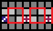
These colorings are independent of each other, so there are 224 = 16777216 ways to color this part.
Region 4
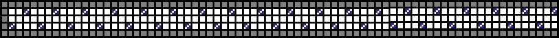
Notice that the cell in R2C2 must be unshaded due to the 2×2 shaded rule. Which island does it belong to? Either it belongs to the clue below it, or the clue to the right of it. Both ways complete the island, as follows:
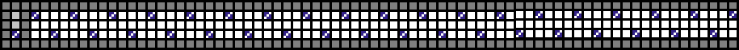
If it goes down, then we have reduced the configuration to a strip with one fewer clue. (Horizontally flipped, but this doesn’t affect the number of solutions.)
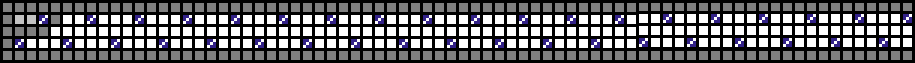
If it goes right, then the 3-clue in the bottom left must go right. So we get this:
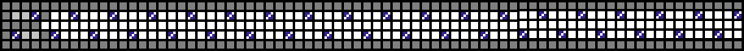
Now, R2C6 must be unshaded and must belong to the clue below or right — either way, the cell in R3C5 must be shaded. Thus, we have reduced the configuration to a strip with two fewer clues.
Therefore, the number of ways to resolve the configuration can be represented by the recurrence F(n) = F(n − 1) + F(n − 2), which is the Fibonacci recurrence. We can verify that there is 1 way to solve the 1 clue configuration, and 2 ways to solve the 2 clue configuration, which are the 2nd and 3rd Fibonacci number, respectively.
As there are 38 clues, the number of ways to resolve this region is the 39th Fibonacci number, which is 63245986.
Putting it all together
Multiplying the subpuzzle answers together, we get 906332499528699084800 × 13367 × 16777216 × 63245986 = 12855067603505401884018131616935811481600. This has the same number of digits as there are blanks, so we may fill in the blanks with this number.
| 1 | 2 | 8 | 5 | 5 | 0 | 6 | 7 | 6 | 0 | 3 | 5 | 0 | 5 | 4 | 0 | 1 | 8 | 8 | 4 | 0 | 1 | 8 | 1 | 3 | 1 | 6 | 1 | 6 | 9 | 3 | 5 | 8 | 1 | 1 | 4 | 8 | 1 | 6 | 0 | 0 |
| 7 | 4 | 10 | 5 | 8 | 2 | 1 | 3 | 9 | 6 | |||||||||||||||||||||||||||||||
| L | E | E | R | A | A | P | P | N | P | |||||||||||||||||||||||||||||||
Reading off the digits in order of the labels and converting using A1Z26 gives us the answer PAPER PLANE.
Author’s Notes
We wanted to make a puzzle that showcases the interesting structures and counting problems which can arise in Nurikabes. Toward this goal, we made the somewhat controversial (especially for a GPH) decision not to have much of an "aha" in this puzzle. We gave clear instructions in the title so that solvers wouldn't get confused about what to do, and could focus on the (hopefully fun but challenging) task of counting solutions. Especially in the Microscope round, with many "aha-based puzzles", we thought a puzzle with clear instructions would be a welcome departure from the norm.
A natural "aha" idea would have been to make solvers figure out on their own that they need to count the number of solutions. However, we wanted to avoid this since it is similar to the "aha" from the puzzle Fun With Sudoku that we recently wrote for the Mystery Hunt, and we didn't want solvers who had seen that puzzle to have an advantage.
We had a few ideas for mechanisms to let solvers confirm answers to subpuzzles, but none of them were very satisfying. We decided instead to make sure none of the subpuzzles were too difficult. That said, we hope the blanks and indices for extraction could help at least a little bit with error correction.
When brainstorming subpuzzles, we had a few ideas that were quite challenging, and needed much more advanced combinatorial arguments combined with more intricate Nurikabe logic. We decided that these require too much experience with combinatorics to include them in the GPH, but we hope to use them in another puzzle some day.
Thanks to Brian Chen, Lennart Jansson, and Lewis Chen for helping with graphics and solution writing!